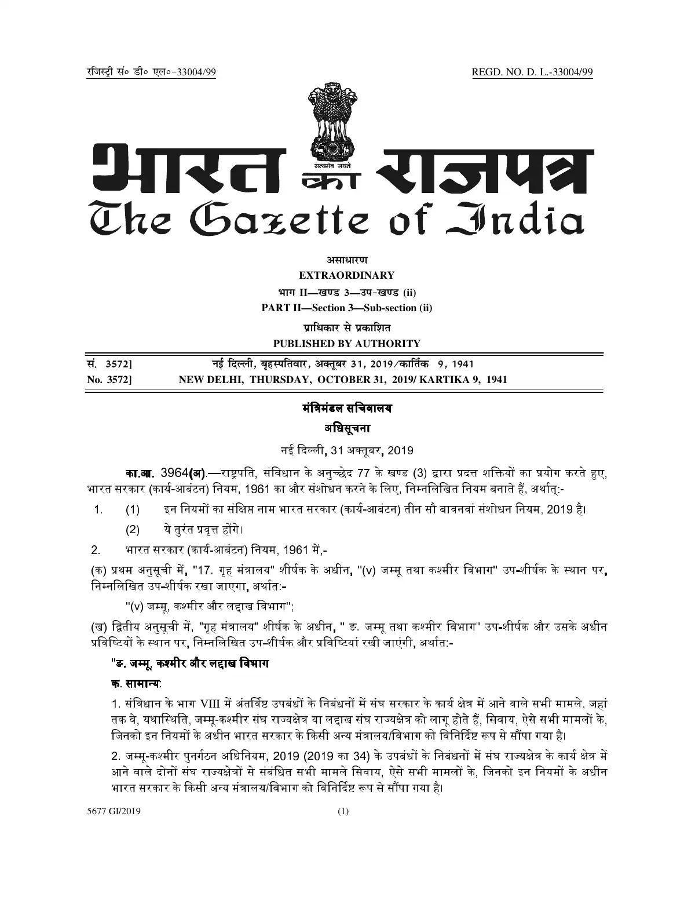
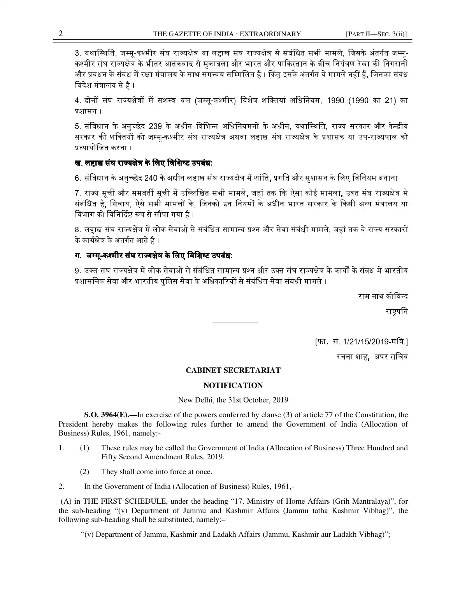
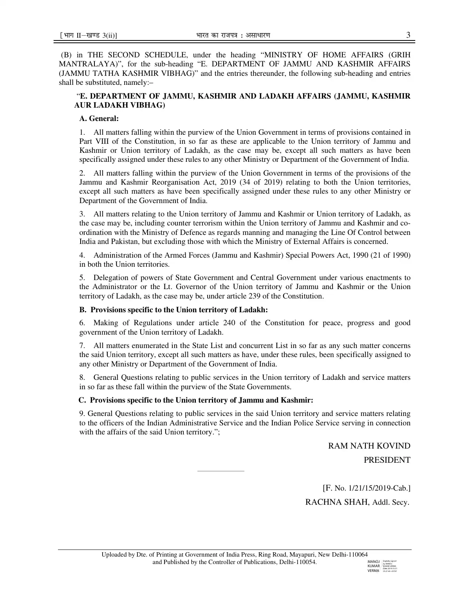

Amendment #352 (S.O. 3964 (E), 2019)
2 changes: 1 to the First Schedule, 1 to the Second Schedule. 2 applied
The order, page by page
Page 1 of 3

Page 2 of 3

1Schedule 1 › Ministry of Home Affairs › Department of Jammu and Kashmir Affairs
- v. Department of Jammu, Kashmir and Ladakh Affairs
applied at schedule 1 › ministry 17 › department v in the Rules after #352
Page 3 of 3

2Schedule 2 › MINISTRY OF HOME AFFAIRS › DEPARTMENT OF JAMMU AND KASHMIR AFFAIRS
- E. DEPARTMENT OF JAMMU, KASHMIR AND LADAKH AFFAIRS
- A. General:
- 1. All matters falling within the purview of the Union Government in terms of provisions contained in Part VIII of the Constitution, in so far as these are applicable to the Union territory of Jammu and Kashmir or Union territory of Ladakh, as the case may be, except all such matters as have been…
- 2. All matters falling within the purview of the Union Government in terms of the provisions of the Jammu and Kashmir Reorganisation Act, 2019 (34 of 2019) relating to both the Union territories except all such matters as have been specifically assigned under these rules to any other Ministry or…
- 3. All matters relating to the Union territory of Jammu and Kashmir or Union territory of Ladakh, as the case may be, including counter terrorism within the Union territory of Jammu and Kashmir and coordination with the Ministry of Defence as regards manning and managing the Line Of Control between…
- 4. Administration of the Armed Forces (Jammu and Kashmir) Special Powers Act, 1990 (21 of 1990) in both the Union territories.
and 7 more
- 5. Delegation of powers of State Government and Central Government under various enactments to the Administrator or the Lt. Governor of the Union territory of Jammu and Kashmir or the Union territory of Ladakh, as the case may be, under article 239 of the Constitution.
- B. Provisions specific to the Union territory of Ladakh:
- 6. Making of Regulations under article 240 of the Constitution for peace, progress and good government of the Union territory of Ladakh.
- 7. All matters enumerated in the State List and concurrent List in so far as any such matter concerns the said Union territory, except all such matters as have, under these rules, been specifically assigned to any other Ministry or Department of the Government of India.
- 8. General Questions relating to public services in the Union territory of Ladakh and service matters in so far as these fall within the purview of the State Governments.
- C. Provisions specific to the Union territory of Jammu and Kashmir:
- 9. General Questions relating to public services in the said Union territory and service matters relating to the officers of the Indian Administrative Service and the Indian Police Service serving in connection with the affairs of the said Union territory.
applied at schedule 2 › ministry MINISTRY OF HOME AFFAIRS › department E in the Rules after #352
How this document was read
From the Government of India (Allocation of Business) Rules, 1961 and their amendments, as published by the Cabinet Secretariat (cabsec.gov.in), read by orgpedia. The readings of the older scanned gazettes have known gaps.